인벤 Inven（韓國，韓語）
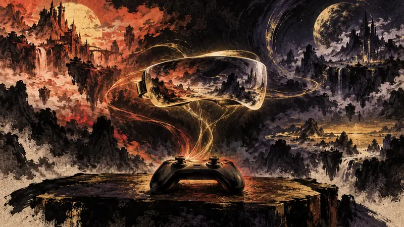
ValveのVR「Steam Frame」は重量半減、価格は1,059ドルから（訳）
Steam Frameはわずか440グラムなのに、プレイヤーはまず最高1,299ドルの価格と抽選制の予約を受け入れなければならない――これは装着時の負担を下げているのか、それとも購入へのハードルを上げているのか？
視点：軽量化によって、長時間装着するハードルは下がる。
先鴉｜夜明けの便り
プレイヤーの主体性：政策がそれをどう制限し、産業がそれをどう形づくり、物語設計がそれをどう実現するか。
最前線
인벤 Inven（韓國，韓語）

Steam Frameはわずか440グラムなのに、プレイヤーはまず最高1,299ドルの価格と抽選制の予約を受け入れなければならない――これは装着時の負担を下げているのか、それとも購入へのハードルを上げているのか？
視点：軽量化によって、長時間装着するハードルは下がる。
인벤 Inven（韓國，韓語）
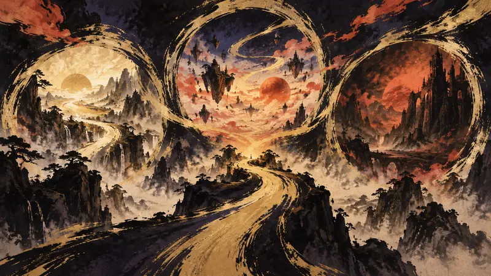
同じ会社が3つのIPを実写映画とアニメーションに振り分け、『Crazy Taxi』には2027年の予定まで組んでいるが、クロスメディア展開はゲームのリズムを守れるのか？
視点：同じIPが同時に映画、アニメーション、新作ゲームへ展開されれば、プレイヤーにとって入口は増えるし、それがクロスメディア資産として扱われていることも見えやすくなる。
Niko News by Niko Partners

RPGが中国の配信ランキング上位を固める一方、『Lord of Mysteries』と『Mistfall Hunter』は560万回と200万回の視聴を、より長く続く勢いへ変えなければならない。
視点：配信ランキングはプレイヤーの関心を比較可能な数字に変える一方、「多く見られているか」が「自分に合うか」より先に来やすく、人に代わってゲームを選別してしまう。
巴哈姆特 GNN

「疫病騎士」から変化する戦場の霧まで、『ディアブロ 5』はキャラクターと世界の二重の変化に見どころを懸ける。プレイヤーはどちらの変化を先に感じるのだろうか？
視点：プレイヤーを世界の中心に置くことは、プレイヤーが世界を変えられることを意味しない。
巴哈姆特 GNN
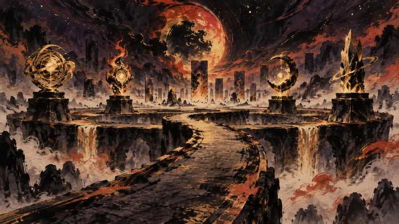
新職業、旧神の再登場、そして2v2が同時に登場する今回の『ハースストーン』アップデートが扱うのは、カードだけではない。世界観と協力プレイのルールも問われることになる。
視点：新職業と旧キャラクターの再登場は、プレイヤーが改めて選び直す入口になるが、だからといって自分のやり方で対戦を作り替えられるわけではない。
Gry-Online.pl
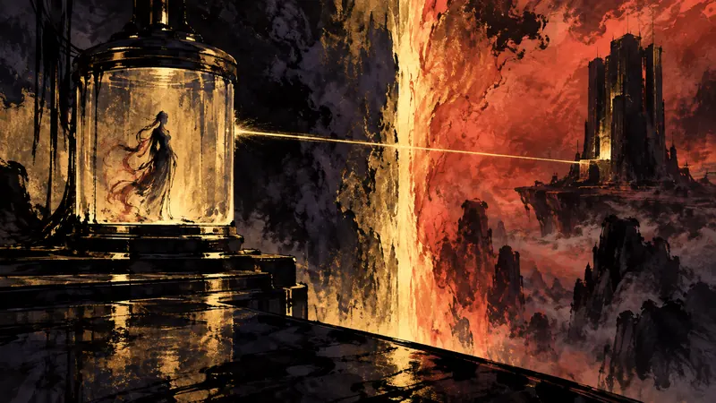
Steam Frameはポーランドで予約受付を開始したが、高価格とPCを離れた後の制限によって、「より自由な」VR体験はまずデバイス側の条件に突き当たることになる。
視点：高価格とPCへの依存によって、「VRデバイスを1台買う」ことが、「機器一式の条件を受け入れる」選択になっている。
Gry-Online.pl
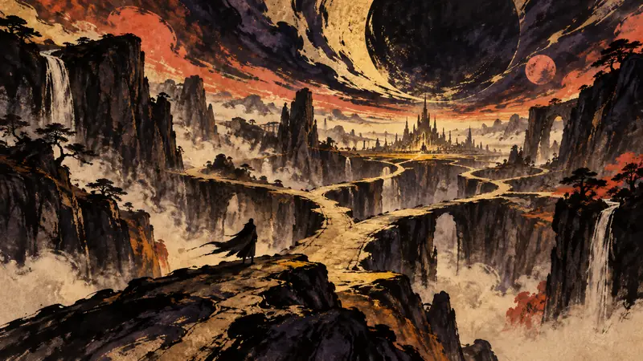
『スタークラフト』がプレイヤーの前に戻ってくるとき、時代は『スタークラフト II』から70年先へ進んでいる。おなじみのRTSの伝統はどれだけ残るのか――そこが、この復帰の鍵となる。
視点：時代設定を70年先へ進めることで、シリーズの世界観には成長を続ける余地が生まれる一方、プレイヤーが慣れ親しんできたRTSへの期待は保証されなくなる。
JeuxVideo.com
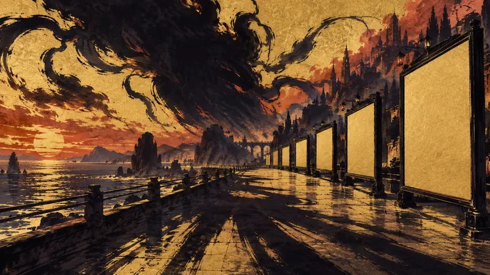
政治の場ではいまだに『GTA 6』の暴力性が議論されているのに、マイアミ・ビーチの地方投票はすでに前例のないプロモーション活動を承認した。論争と露出が同時に起きているが、その境界線はどこにあるのだろうか？
視点：プレイヤーは『GTA 6』の世界に入るかどうかを選べるが、街の空間でその宣伝に出くわすかどうかまで選べるとは限らない。
DTF (игры)

Steam Frameは映像、重量、モジュール式の設計にそれぞれ見どころがあるが、レビューが最後に問いを戻すのはやはり価格だ――あなたのPCと遊び方に見合うのか？
視点：レビューはデバイスの価値を既存のPCに結びつけており、新しいハードウェアが見せる可能性だけを見るのではなく、まず自分の機材と使える時間から考えるよう促している。
Oyun Gunlugu（土耳其，土耳其語）
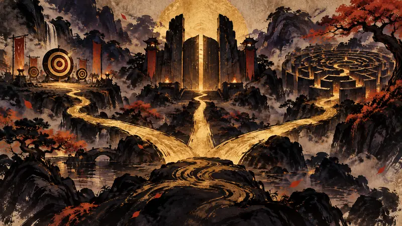
13.06はWardenを1体追加するだけではない。ランダムスキル、エージェントの熟練、競技進行を同時にプレイヤーの日常へ組み込み、新たな選択肢とともに追いかけるべき進行ルートも増やしている。
視点：熟練度システムによって、エージェント選びに積み上げられる方向性が生まれ、特定のエージェントを極めるプレイヤーは自分の進む道を見つけやすくなる。
Jagat Play（印尼，印尼語）
7.1ではTsaritsaとRonovaのメインストーリー、6周年コンテンツ、2人の★5キャラクターが同時に動き出すなか、プレイヤーはまず物語、イベント、それとも新キャラクターの祈願に時間を使うべきなのだろうか？
視点：1回のアップデートに複数のコンテンツへの道筋が詰め込まれると、プレイヤーの選択肢は増える一方で、限られた夜の時間がイベントの順番に振り回されやすくもなる。
GamingOnPhone（印度，英語）
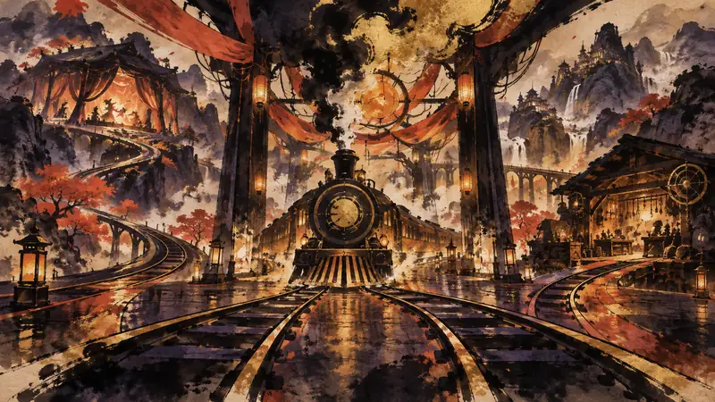
2人のSSR、フルボイスのストーリー、復帰するキャラクターが同時に登場し、Coin Rush Showdownは1回のアップデートを複数の復帰理由へと変え、プレイヤーの時間の使い方も組み替えます。
視点：大型アップデートはゲームをプレイヤーの予定表にもう一度組み込み、戻ってきたい人には明確な入口になる一方、短時間だけ遊びたい人には新たな借りを抱えたような感覚を生むこともあります。
GamingOnPhone（印度，英語）
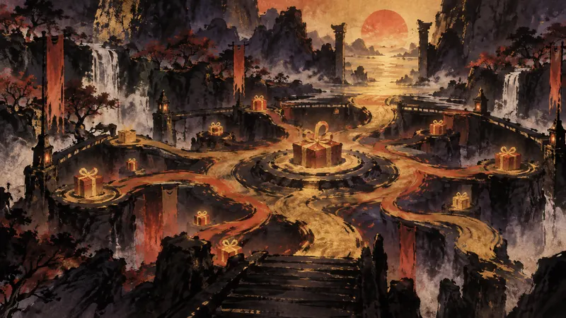
無料報酬は単なる追加リソースに見えるかもしれませんが、本当の問題は、受け取るためだけにゲームへのログインを日々の予定や時間割にもう一度組み込み、もともとのプレイペースまで変える必要があるのでしょうか？
視点：無料報酬は、お金をかけずに得られる選択肢をゲームに加えますが、「受け取る」ことは、一度きりの便利さから、覚えておかなければならないタスクへと簡単に変わります。
最前線
巴哈姆特 GNN
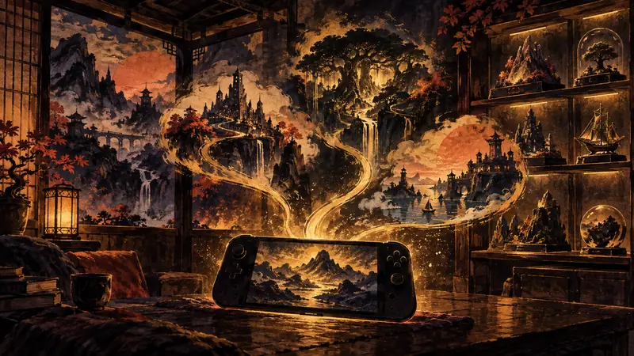
2027年初頭のSwitch向けパッケージ版コンピレーション発売とTGS 26への登場により、コレクターもコンソール派も、作品を次に入手できる明確な時期を見通せる。
視点：既存の内容をパッケージ版コンピレーションにまとめることで、作品を一度に所有したいプレイヤーが探す手間は減り、購入のタイミングも新バージョンに固定された。
觸樂
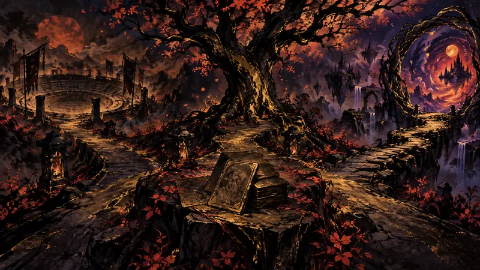
大ヒットから5年、正統続編を作らないPoncleは、クロスIPコラボやローグライクなカードゲームで『Vampire Survivors』の次の形を試している。
視点：シリーズを複数の遊び方に分ければ、プレイヤーは慣れ親しんだ世界に別の入口から入れる一方、もともとは明確だった作品の境界が、繰り返し開発できる資産へと変わっていく可能性もある。
觸樂
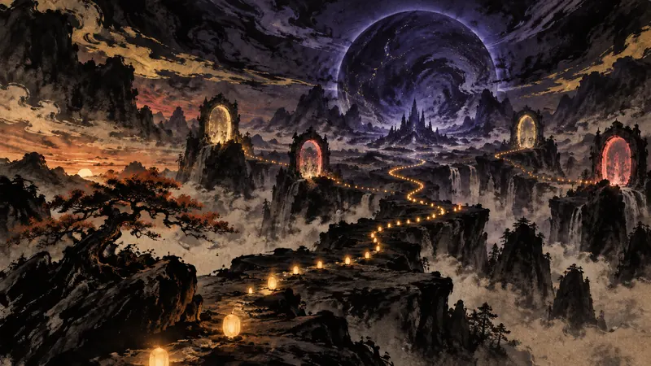
わずか10分間の試遊なのに、あるプレイヤーは未明から列に並び、5つの地域に一度に申し込んだ――この投入は作品への情熱から生まれたのか、それとも期間限定のテストと希少な参加資格がもたらしたプレッシャーによるものなのか？
視点：未明から列に並び、地域をまたいで申し込むことは、プレイヤーが理性を失った証拠ではない。
觸樂
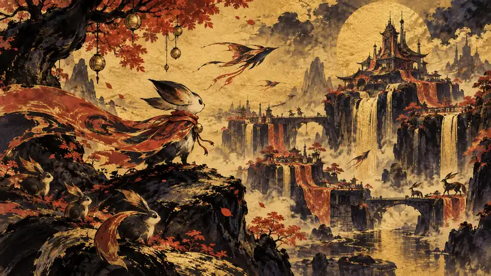
S4は初日にiOS売上ランキング2位へ駆け上がり、アップデートではプレイヤーが自分の衣装で一部のストーリーに戻れるようになり、シーズン報酬とキャラクターの残す痕跡が同時に調整された。
視点：自分の衣装を過去のストーリーに持ち込めることで、プレイヤーの選択が世界に小さくても確かな痕跡を残すようになる。
Polygon
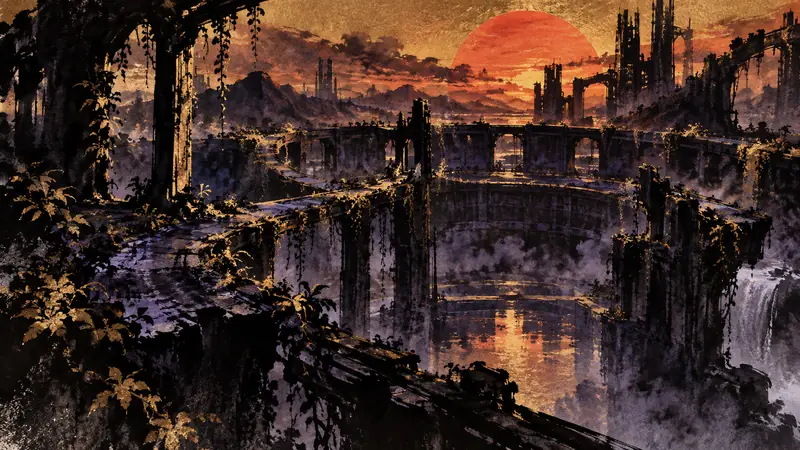
数年を経て《Evolve》に再びマルチプレイへの入り口をもたらしたのは、MODコミュニティが作り、ボランティアが維持するランチャーだ。
視点：コミュニティが接続の入り口を再建したことで、次第に忘れられていたマルチプレイゲームが、再びプレイヤーの選択肢に戻ってきた。
Polygon
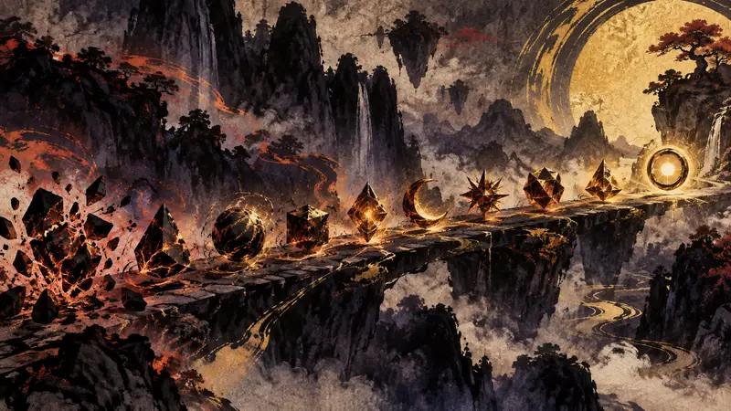
アルケミーは2027年初頭に終了するが、Power Nineを無から生み出し、カードを永久に変更し、先攻・後攻の差を調整する10のデジタルデザインを残す。
視点：このランキングは膨大なカードプールへの入り口を用意してくれる一方で、「何を遊ぶべきか」という判断を一時的に外部の順位づけに預けることにもなる。
Gry-Online.pl
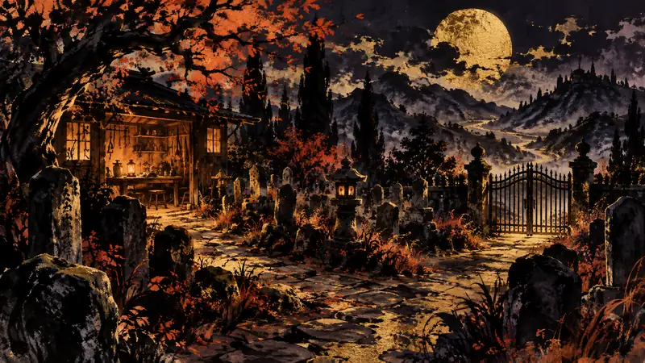
発売まであと1週間となり、記事では価格がこのダークなサンドボックスRPG続編を手に取りにくくすることはないと見ており、体験版の更新情報も先に待機リストに加わっている一方、購入のタイミングはなおプレイヤー自身の予定に委ねられている。
視点：価格が低めなら続編をゲームライブラリに加えやすくなるが、持っているからといって宿題を一つ抱えることにはならない。
JeuxVideo.com
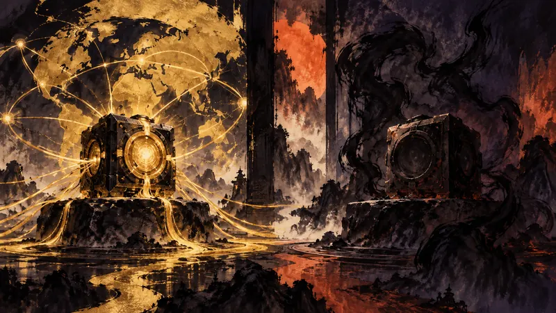
どちらも6コアだが、99ユーロのAM4向けアップグレード製品には明確な用途がある一方、189ユーロのAM5新製品は早くも自社モデルと競合している。価格差が十分な説得力につながるとは限らない。
視点：2つの価格帯によってアップグレードの選択肢は予算別に分かれるが、モデル同士が近すぎると、将来の余裕を犠牲にしてまで節約する価値があるのか判断しにくくなる。
Arab Game News（中東／波灣地區，英語）
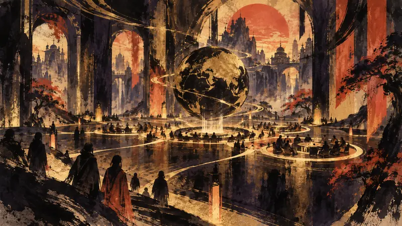
3日間の議題がゲームの経済的・創造的・社会的な役割を同じテーブルに載せるなか、誰が業界の未来を定義できるのかが、このフォーラムが向き合わなければならず、問い続ける価値のある核心的な問題であり、業界の方向性にも関わる論点になる。
視点：ゲームの経済的・創造的・社会的な役割を同じ議題に置くことで、業界の選択が一つの作品の売上だけではないものとして見えてくる。
Oyun Gunlugu（土耳其，土耳其語）
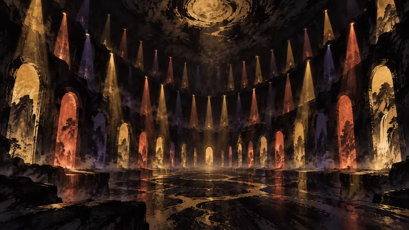
45分、40本のゲーム、8本のワールドプレミアという大量の新情報を、Triple-i Initiativeは司会者のいない一つのライブ配信に詰め込み、そのテンポ自体を見どころにしている。
視点：40本の作品を一つのショーケースに集めることで、プレイヤーは新しいゲームを探す時間を節約できる一方、注意を向ける順番は主催者の構成に委ねることになる。
GamingOnPhone（印度，英語）
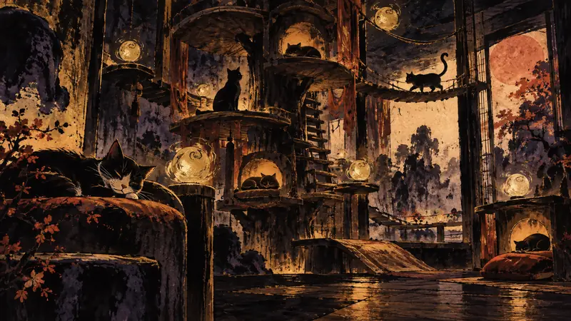
キャットツリーのレイアウトや猫の収集に時間を使いたいなら、交換コードの一覧が試行錯誤の手間を省いてくれるかもしれない。本当の選択は、資源のために自分のゲームのペースや進行を意図的に速めるかどうかにある。
視点：交換コードは、より時間を節約できる資源への道筋を示し、レイアウトや収集を重視する人が自分の関心のあるところへ早く到達できるようにする。